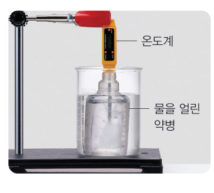

교과서 ‘다르게 해 보기’처럼 물을 얼린 약병을 미지근한 물에 넣고, 센서 2개로 약병 속 얼음과 바깥 물의 온도를 동시에 기록하자. 얼음이 녹는 동안 온도가 일정한 까닭과, 그 열이 어디에서 오는지 알아내자.
준비물 아두이노 UNO, USB 케이블, LM35 온도 센서, 써미스터(10 kΩ)와 10 kΩ 저항(또는 아날로그 온도 센서 모듈), 브레드보드, 점퍼선, 열수축 튜브(또는 랩·글루건), 작은 약병, 물, 냉동실, 비커(300 mL), 미지근한 물(약 35 ℃), 노트북(크롬)
| 처음 온도(℃) | 나중 온도(℃) | |
|---|---|---|
| 🔴 바깥 물 (센서 1) | ||
| 🔵 약병 속 (센서 2) |
| 평가 항목 | 스스로 평가 |
|---|---|
| 센서의 측정 범위를 생각해 알맞은 자리에 설치했다. | |
| 두 그래프를 비교해 열에너지 이동을 설명했다. | |
| 모둠원과 역할을 나누어 협력했다. |